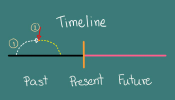

♦ ประโยคบอกเล่าจะเป็นโครงสร้างธรรมดา คือ ประธาน + was, were + กริยา เติม ing
| I, He, She, It, A Cat | was | eating. |
| You, We, They, Cats | were | eating. |
♦ โครงสร้างปฏิเสธคล้ายประโยคบอกเล่า เพียงแค่เอาคำว่า not มาวางหลัง was, were
| I, He, She, It, A Cat | was not | eating. |
| You, We, They, Cats | were not | eating. |
การทำประโยคคำถามง่ายๆเอง เพียงแค่เอาคำว่า Was, Were มาวางไว้หน้าประโยคแค่นั้นเองและอย่าลืมเติมเครื่องหมายคำถามท้ายประโยค
ประโยคคำถามแบ่งออกเป็นสองประเด็นคือ ถามในรูปแบบบอกเล่า และถามรูปแบบปฏิเสธ
1. การถามในรูปแบบบอกเล่า
Did + ประธาน + กริยาช่องที่ 1 (กริยาไม่เติม s
ทุกกรณี)
| Was | I, He, She, It, A Cat | eating? |
| Were | You, We, They, Cats | eating? |
2. การถามในรูปแบบปฏิเสธ
การถามในรูปปฏิเสธแบ่งออกอีกสองประเด็นคือ
ในรูปแบบเต็ม และรูปแบบย่อ
รูปแบบเต็ม
| Was | I, He, She, It, A Cat | not | eating? |
| Were | You, We, They, Cats | not | eating? |
รูปแบบย่อ
| Wasn't | I, He, She, It, A Cat | eating? |
| Weren't | You, We, They, Cats | eating? |
ให้เอาคำเหล่านี้ (Who, What, Where, When, Why, How) นำหน้าประโยค ตามด้วย
was, were
- Who was eating while we were cooking? ใครกำลังกิน ขณะที่พวกเรากำลังทำกับข้าว
- What were you doing when I phoned? คุณกำลังทำอะไรอยู่ ตอนที่ฉันโทรหา
1. ใช้เพื่อกล่าวถึงเหตุการณ์หรือการกระทำที่ เกิดขึ้นในอดีต ในช่วงเวลาที่บ่งไว้อย่างชัดเจนเช่น
- I was taking a shower at eight o’clock last night.
(ฉันกำลังอาบน้ำอยู่เมื่อวานตอนสองทุ่ม)
2. ใช้เพื่อกล่าวถึงเหตุการณ์สองเหตุการณ์ที่ เกิดขึ้นซ้อนกันในอดีต
โดย…เหตุการณ์แรกที่เกิดขึ้นและดำเนินอยู่ จะใช้ Past Continuous Tense
เหตุการณ์สั้นๆนั้นได้เข้ามาแทรก จะใช้ Past Simple Tense
- I met you boyfriend in the park while I was jogging.
(ฉันเจอแฟนคุณในสวนตอนฉันกำลังวิ่งจ๊อกกิ้งอยู่)
**ในขณะที่ฉันกำลังวิ่งอยู่ (past continuous tense ) ก็เจอแฟนของคุณในสวน (past simple tense)
Time Line เส้นเวลา
ถ้ามีเหตุการณ์ในอดีตสองเหตุการณ์ ซึ่งมี “เหตการณ์หนึ่งเกิดก่อน แล้วมีอีกหนึ่งเหตุการณ์เกิดตามหลัง”
- สีดำคือ อดีตที่หมองหม่น
- สีส้มคือปัจจุบันที่สดใส
- สีชมพู คือ อนาคตที่เรืองรองผ่องอำไพ
- ลูกศรสีขาวไซร้คือเหตุการณ์ที่เกิดก่อน
- ลูกศรสีแดงคือเหตุการณ์ที่เกิดทีหลัง
- จุดสีแดงคือ เวลาในอดีต มีสองจุด เพราะมีสองเหตุการณ์
- ลูกศรสีขาวนั้นคือ past continuous tense เป็นเหตุการณ์ที่เกิดขึ้นก่อนและกำลัง เกิดขึ้นอยู่ และจะดำเนินต่อไปอีกสักพักเพื่อให้จบกระบวนการ
- ส่วนลูกศรสีแดงคือ past simple tense ตัวนี้เข้ามาแทรกทีหลังกลางคัน
คำกริยาที่นำมาใช้กับ Past Continuous ต้องเป็นกริยาที่สามารถแสดงการกระทำได้นาน คำกริยาที่สามารถทำได้นาน และเห็นมาออกข้อสอบบ่อยๆ เช่น do, drive, eat, have, read, sing, sit, sleep, swim, teach, write, clean, cook, cry, dance, play, rain, walk, wash, watch
คำกริยาที่นำมาใช้กับ Past Simple ส่วนใหญ่เป็นกริยาที่เกิดขึ้นแป๊บเดียว ไม่สามารถทำได้นาน คำกริยาที่ไม่สามารถทำได้นาน เช่น take, start, arrive, see, hear, smell, hit, come, ring, cut
3. ใช้เพื่อกล่าวถึงเหตุการณ์ที่ เกิดขึ้นควบคู่กันไป ณ เวลาเดียวกัน (Parallel Actions) โดย เหตุการณ์ทั้งสองเหตุการณ์จะใช้ Past Continuous Tense เช่น
- I was sleeping while the teacher was teaching.
(ฉันนอนหลับขณะที่คุณครูกำลังสอนอยู่)
4. เรามักใช้คำว่า when, while, as ใน Past Continuous Tense เพื่อเชื่อมเหตุการณ์ ต่างๆเข้าด้วยกัน เช่น
- As I was going to the church, he was going to the sea.
(ขณะที่ฉันกำลังเดินทางไปที่โบสถ์ เขาก็กำลังไปทะเล)
**ประโยคที่อยู่หลัง while, as (ขณะที่) ใช้ past continuous
**ประโยคที่อยู่หลัง when (เมื่อ, ตอนที่) ใช้ past simple